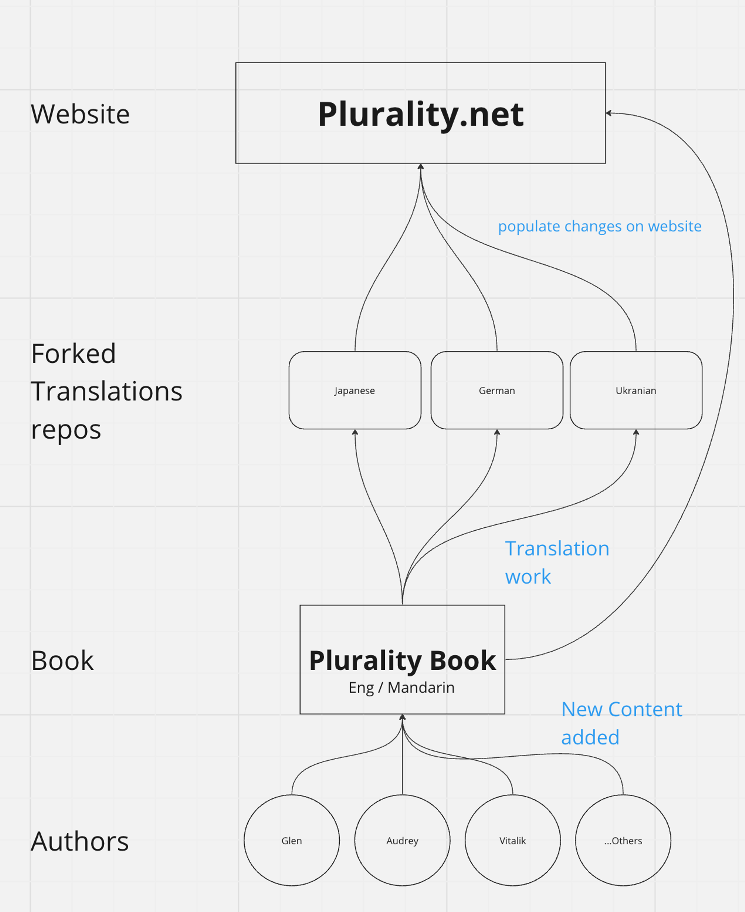
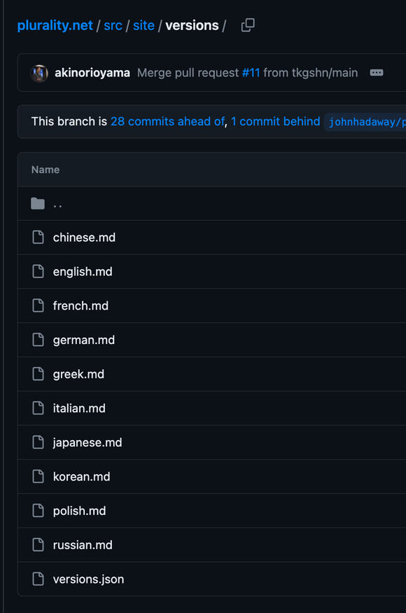
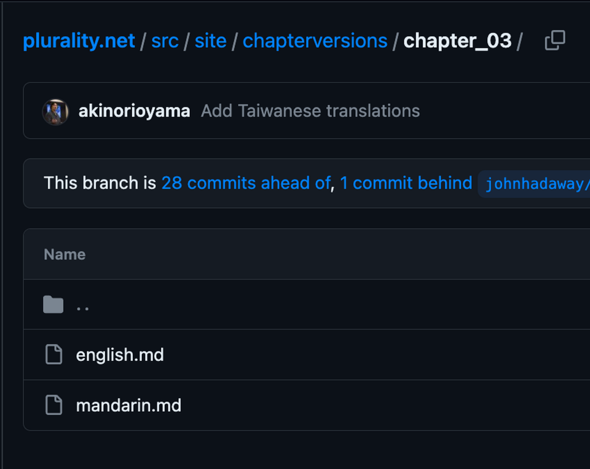
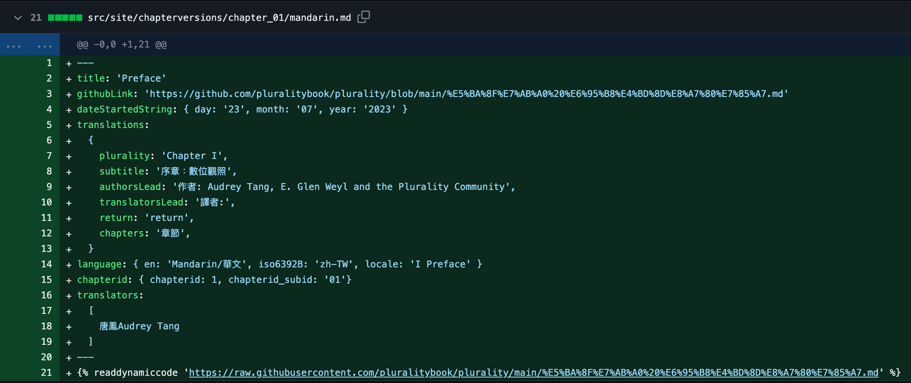

Contributing translations
👋 Welcome! This document aims to help onboard new contributors from different regional communities to help translate the Plurality book.
Plurality is an open, git-based collaborative book project that aims to offer a vision for the future of technology focused around empowering and bridging social difference.
We need local communities’s help to populate the book’s content in as many languages around the world as possible
Contributor
Reach out to Jacky or Jason if there are any questions here
Join the Plurality.net Discord server for contributors: https://discord.gg/nTH7GqprwY
Is there a point of contact or thread already for your language / region?
- if yes, please find them in #translations, reach out to them in your community’s thread
- if no, tag Jacky in #general under Contributors to get onboarded
Translation Process
Reach out to Jacky if there are any questions here
-
English and Traditional Mandarin are considered the root language that will be directly uploaded to the root repository. Translations of other languages will need to be done in forks from the root to decentralize and streamline each community’s independent workflow. 
-
The point of contact for each community can fork the main branch of plurality root repository on GitHub and start adding their translated content in the forked repository.
- please name the fork with book name + language name for easier recognizability (e.g plurality-japanese)
- Reach out to Jacky or Jason in Discord to get the forked repository verified as an official translation repository to be listed in the root repository’s Readme page here
Publication Workflow
Reach out to Aki or Jacky if there are any questions here. Many steps are still quite manual, the process should become easier as more people go through them.
-
Start with translating the announcement if its not already translated, and submit it to be added under the different versions of the announcement in GitHub. 
-
Add translated chapters in your forked repository with English file names
- Create a pull request on https://github.com/alexrandaccio/plurality.net using same structure as https://github.com/alexrandaccio/plurality.net/pull/14/files to add new chapters here
 
- Aki will approve incoming pull requests in order for the content to be shown on the website
References
Feel free to ask any questions in Discord under Contributors category
- Discord Server: https://discord.gg/nTH7GqprwY
- Plurality Website: https://www.plurality.net/
- Plurality GitHub: https://github.com/pluralitybook/plurality
- Plurality.net Website GitHub: https://github.com/alexrandaccio/plurality.net